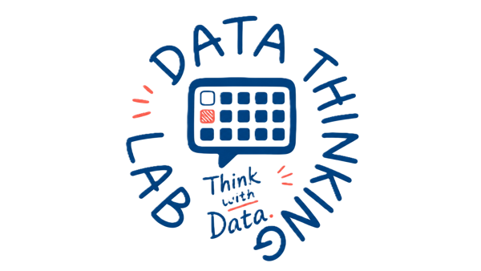

탐색에서
명세까지
EDA의 질문법과 재현 가능한 분석 명세

오늘의 여정
EDA 사고법
탐색과 검증, 네 가지 원칙
자료의 구조
관측 단위, 변수, 척도
분석 명세
모호한 요청을 재현 가능한 요청으로
그런데 이것을
어떻게 믿을 것인가?
“평균 통학 시간은
몇 분인가?”
평균 하나를 계산하기 전에 무엇을 확인해야 할까요?
누구?
관찰 대상
어떤 값?
단위와 기준
무엇이 없음?
결측
무엇이 큼?
이상점
탐색과 확증은
질문의 방향이 다르다
자료 안에 무엇이 있는가?
그림 · 요약 · 변환 · 이상점 관찰
결과: 다음에 검증할 질문
미리 정한 가설을 얼마나 뒷받침하는가?
연구 설계 · 추정 · 신뢰구간 · 검정
결과: 사전 질문에 대한 근거
“버스 이용자의 시간이 길다”
≠
“버스가 시간을 길게 만든다”
집단 차이는 관찰입니다. 인과관계는 자료 수집 방식과 다른 설명을 더 확인해야 합니다.
EDA의 네 가지 렌즈
저항성
큰 값 하나에 얼마나 흔들리는가?
잔차
설명하고 남은 것에 무엇이 있는가?
재표현
눈금을 바꾸면 무엇이 보이는가?
현시성
숫자를 그림으로 드러내면?
큰 값 하나가
대표값을 바꾼다
평균
(10+20+30+40+150) ÷ 5
중앙값
정렬했을 때 가운데 값
설명한 뒤,
남은 것을 본다
예상 30
모형이 예측한 통학 시간
실제 40
관찰한 통학 시간
잔차 +10
모형이 놓친 차이
잔차에 곡선이나 집단별 패턴이 남는가?
눈금을 바꾸고,
그림으로 드러낸다
비대칭을 단순하게
로그·제곱근 변환으로 관계와 분포를 다른 눈금에서 본다.
주의: 변환 뒤 단위와 해석도 달라진다.
평균 너머의 모양
점그림·히스토그램·상자그림으로 군집·비대칭·큰 값을 본다.
주의: 축과 구간 폭이 인상을 바꾼다.
한 숫자로 소개한다면
무엇을 선택할까?
- 합계·개수·평균·중앙값을 계산합니다.
- 150을 50으로 바꾸고 두 대표값을 비교합니다.
- 150분을 오류라고 단정할 수 있는지 토론합니다.
개인 6분 → 짝 토론 4분 → 공유 2분
계산 · 관찰 · 해석을
분리해 기록한다
평균 50분
주어진 다섯 값의 산술 결과
10–40분 + 150분
한 값이 다른 네 값보다 큼
가상 자료 5건
전체 학생으로 일반화 불가
무엇을 계산할지
충분히 정했는가?
한 행은
무엇을 나타내는가?
학생 한 명
8행 = 서로 다른 학생 8명
하루 통학 기록 한 건
같은 학생이 여러 행에 반복될 수 있음
행 수는 언제나 사람 수가 아니다.
표를 읽는 네 단어
관측 단위
자료를 수집한 대상
관측치
한 단위의 값 묶음
변수
측정·분류한 특성
값
특정 행·열의 기록
숫자라고 모두
같은 숫자가 아니다
같음 · 다름
분류할 수 있다
앞 · 뒤
순서를 매길 수 있다
같은 차이
간격을 비교할 수 있다
절대적 영점
배수를 비교할 수 있다
척도는 “어떤 계산이 가능한가?”를 결정합니다.
세 질문으로
척도를 판별한다
아니오
순서 없음 → 명목
순서만 있음
간격 불확실 → 순서
간격도 같음
영점 의미에 따라 구간·비율
명목척도는
이름표다
같다 · 다르다
교통수단, 전공, 혈액형, 학생 ID
빈도 · 비율 · 최빈값
버스 3명, 전체의 37.5%
크기 · 차이 · 평균
지하철이 버스보다 “크다”는 뜻은 없음
막대그림
범주별 개수나 비율을 비교
순서척도는
순위만 보장한다
낮다 · 높다
만족도 1–5, 학년, 등급
빈도 · 누적비율 · 중앙 범주
4점 이상이 몇 %인지 확인
단계 간 간격
1→2와 4→5의 체감 차이가 같다고 단정 못함
4점 ≠ 2점의 두 배
숫자 코딩이 배수 의미를 만들지 않음
구간척도는
차이가 의미 있다
동일한 간격
섭씨 기온, 달력의 연도
차이 · 평균 · 표준편차
20℃−10℃=10℃ 차이
임의의 기준점
0℃는 열이 전혀 없다는 뜻이 아님
배수 비교
20℃는 10℃의 두 배로 덥지 않음
비율척도는
배수까지 의미 있다
동일한 간격 + 참된 영점
시간, 거리, 무게, 개수
차이 · 평균 · 비율
40분은 20분의 두 배
양의 부재
0분은 소요 시간이 없음을 뜻함
같은 측정 기준
편도와 왕복, 분과 시간을 섞지 않음
척도에 따라
가능한 질문이 달라진다
| 척도 | 보장되는 관계 | 대표 요약 | 하면 안 되는 해석 |
|---|---|---|---|
| 명목 | 같음·다름 | 빈도, 비율, 최빈값 | 평균 코드 |
| 순서 | 같음·다름 + 순서 | 빈도, 누적비율, 중앙 범주 | 단계 간 간격 동일 단정 |
| 구간 | 순서 + 동일 간격 | 평균, 표준편차, 차이 | 두 배·절반 |
| 비율 | 동일 간격 + 참된 영점 | 평균, 표준편차, 비율 | 기준·단위가 다른 값의 배수 |
버스=1 · 지하철=2 · 도보=3
숫자로 저장해도 교통수단은 여전히 명목척도입니다.
평균 교통수단 1.8?
코드의 산술은 실제 교통수단의 양을 뜻하지 않습니다.
평균 학번 20261234?
식별번호의 크기 차이는 분석할 특성이 아닙니다.
만족도 4점은
2점의 두 배인가?
범주별 빈도와 결측
1·2·3·4·5점 응답이 각각 몇 개인지 제시
가정과 한계를 명시
단계 간 간격을 같다고 보는 근거와 해석 범위 설명
0과 결측은
같지 않다
측정된 값
소요 시간이 없다고 응답한 실제 기록
알려지지 않은 값
미응답·누락 등으로 시간을 모름
결측을 0으로 바꾸면 “모름”을 “없음”으로 바꾸는 것입니다.
가상 통학 자료 8건
| student_id | mode | minutes | satisfaction |
|---|---|---|---|
| S01 | 버스 | 20 | 2 |
| S02 | 버스 | 40 | 3 |
| S03 | 버스 | 결측 | 4 |
| S04 | 지하철 | 30 | 3 |
| S05 | 지하철 | 50 | 결측 |
| S06 | 지하철 | 70 | 2 |
| S07 | 도보 | 10 | 5 |
| S08 | 도보 | 20 | 4 |
1행 = 가상 학생 1명 · minutes = 평소 편도 통학 시간(분)
Colab에서 자료 만들기
import pandas as pd
df = pd.DataFrame({
"student_id": ["S01","S02","S03","S04","S05","S06","S07","S08"],
"mode": ["버스","버스","버스","지하철","지하철","지하철","도보","도보"],
"minutes": [20, 40, None, 30, 50, 70, 10, 20],
"satisfaction": [2, 3, 4, 3, None, 2, 5, 4]
})
display(df)
print(df.shape)
print(df.dtypes)
print(df.isna().sum())표와 함께 읽는
자료 사전
| 변수 | 의미 | 척도 | 처리 기준 |
|---|---|---|---|
| student_id | 가상 학생 식별자 | 명목 | 집계용 수치가 아님 |
| mode | 주 교통수단 | 명목 | 버스·지하철·도보 |
| minutes | 평소 편도 통학 시간 | 비율 | 분 단위, None=미응답 |
| satisfaction | 통학 만족도 1–5 | 순서 | 1=매우 불만족, 5=매우 만족 |
척도와 요약 방법을
함께 결정하라
- student_id, mode, minutes, satisfaction의 척도를 정합니다.
- 각 변수에 가능한 비교와 적절한 요약을 적습니다.
- 교실 온도(℃)는 왜 비율척도가 아닌지 설명합니다.
- 0분·미응답·만족도 1점의 차이를 말합니다.
개인 6분 → 짝 검토 3분 → 공유 3분
척도 → 요약 → 해석
| 변수 | 척도 | 우선 요약 | 주의 |
|---|---|---|---|
| student_id | 명목 | 고유 개수 | 평균 금지 |
| mode | 명목 | 빈도·비율 | 숫자 코딩해도 범주 |
| satisfaction | 순서 | 빈도·누적비율 | 간격 동일성 미보장 |
| 교실 온도(℃) | 구간 | 평균·차이 | 배수 해석 금지 |
| minutes | 비율 | 평균·중앙값·분포 | 단위·측정 기준 확인 |
재현 가능한 결정으로
재현 가능한 명세의
네 요소
자료 출처
어떤 자료이며 1행은 무엇인가?
대상 변수
변수의 뜻·척도·단위와 비교 기준은?
결측 처리
어떤 통계에서 무엇을 제외하는가?
출력 형태
표·정렬·단위·설명은?
행의 의미?
결측은?
분모는?
출력은?
같은 결과가 나와도 처리 규칙은 보이지 않을 수 있습니다.
변수: mode(명목)별 minutes(비율, 편도 통학 시간, 분).
결측: minutes 결측은 시간 통계에서만 제외하고 0으로 채우지 말 것. satisfaction 결측 때문에 시간 응답을 제외하지 말 것.
출력: 전체·유효·결측 수, 평균·중앙값을 평균 오름차순 표로 제시. 표시만 소수 둘째 자리. 소표본·인과·일반화 한계 설명.
df.dropna()는
너무 많이 지울 수 있다
S03
minutes 결측 → 시간 평균에서 제외
S05
satisfaction만 결측 → 50분은 시간 분석에 사용 가능
평균이 우연히 같아도 유효 응답 수 3이 2로 줄면 처리 방식은 달라집니다.
같은 자료, 다른 명세
결과와 과정을 비교하라
- 27번 슬라이드의 자료 코드를 Colab에 실행합니다.
- 새 대화 두 개에서 33번 요청 A와 34번 요청 B를 각각 실행합니다.
- 결측 처리·분모·원자료 변경·정렬·한계를 비교합니다.
- 모호함을 보완한 요청 C를 작성합니다.
준비 4 → A 8 → B 8 → 비교 4
A와 B를 비교하는
여섯 가지 질문
- 어떤 열의 결측을 제외했는가?
- 전체·유효·결측 수가 드러나는가?
- 버스 평균은 30분인가?
- 원자료를 변경했는가?
- 정렬·반올림 지시를 따랐는가?
- 자료의 한계를 설명했는가?
기준 결과와 대조
| 교통수단 | 전체 | 유효 | 결측 | 평균(분) | 중앙값(분) |
|---|---|---|---|---|---|
| 도보 | 2 | 2 | 0 | 15.00 | 15.00 |
| 버스 | 3 | 2 | 1 | 30.00 | 30.00 |
| 지하철 | 3 | 3 | 0 | 50.00 | 50.00 |
size
집단의 전체 행 수
count
해당 열의 비결측 수
좋은 분석은
계산에서 시작하지 않는다
척도는 가능한 계산을 정하고, 명세는 그 결정을 재현 가능하게 만듭니다.
① 한 행의 의미부터 정한다.
② 척도는 가능한 계산을 정한다.
③ 0과 결측을 구분한다.
④ 결과보다 처리 규칙을 남긴다.
다음 주: 코드 읽기와 결과 검증 — 수계산 대조 · 대안 방법 · 극단 사례